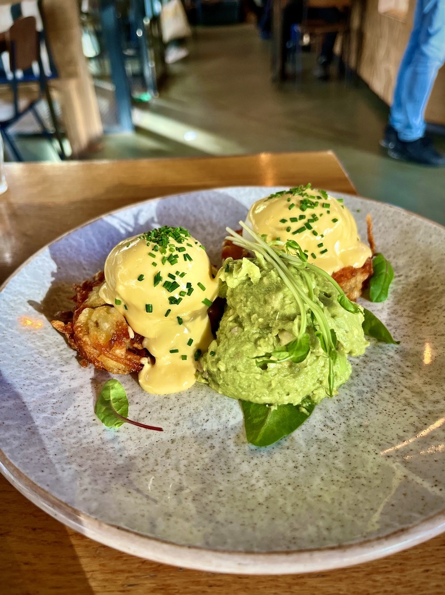
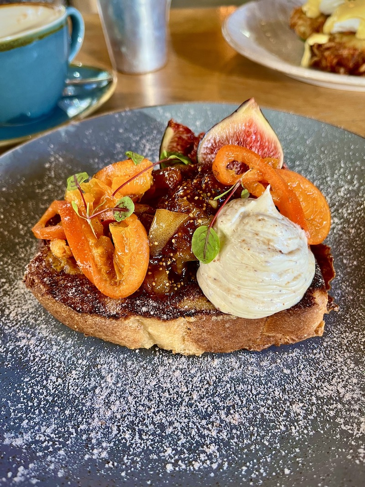
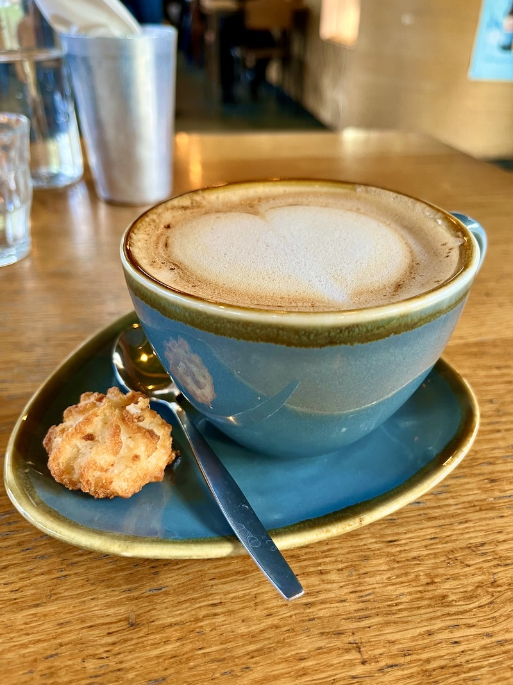
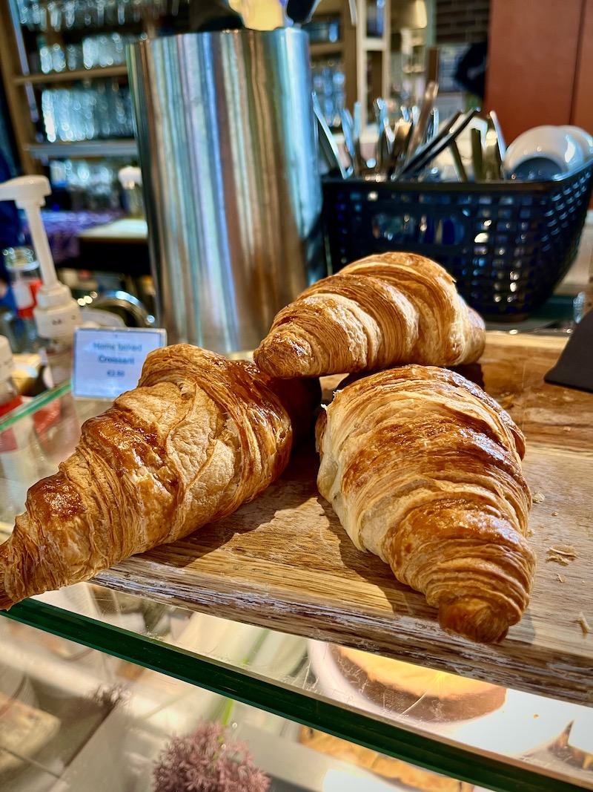
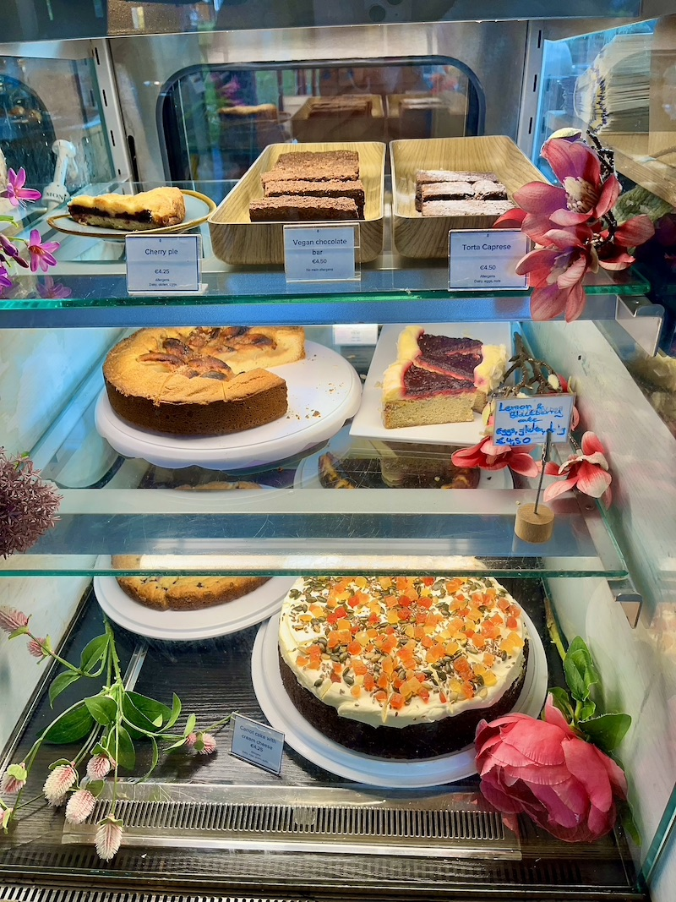
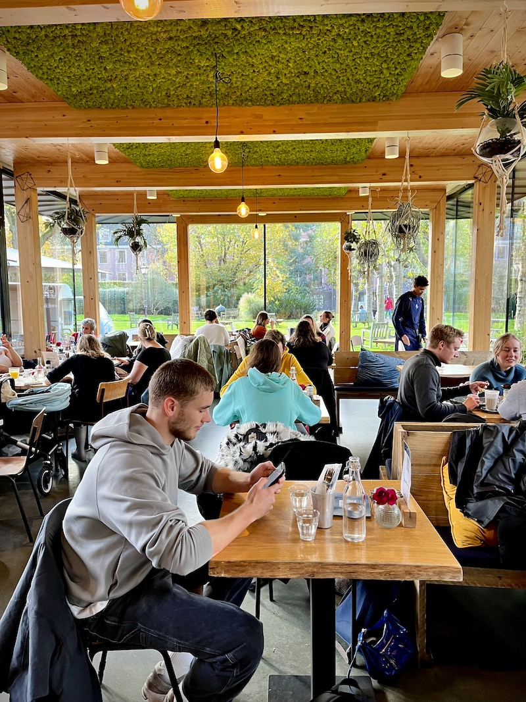
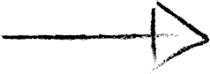
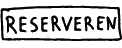

DIGNITA
Het eten van het restaurant Dignita ziet er niet alleen fantastisch uit, de kwaliteit is zeker ook echt te proeven! Ze bereiden al hun gerechten met biologische producten en passen hun menu op de seizoensgroenten aan. Zoveel mogelijk ingrediënten zijn lokaal geproduceerd. De broden en taarten bakken ze zelf en deze zijn dan ook apart op te halen en zeer geliefd in de buurt.
Praktische informatie
Vanaf Amsterdam Centraal ben je in 3 minuten met de metro bij Waterloopplein. Vanaf daar is het 5 minuutjes lopen naar hun adres op de Nieuwe Herengracht 18a.
Je bent hier elke dag van de week welkom tussen 09:00 en 17:00 voor een heerlijke brunch of lunch, drankjes, borrelhapjes en hun zelgemaakte patisserie.